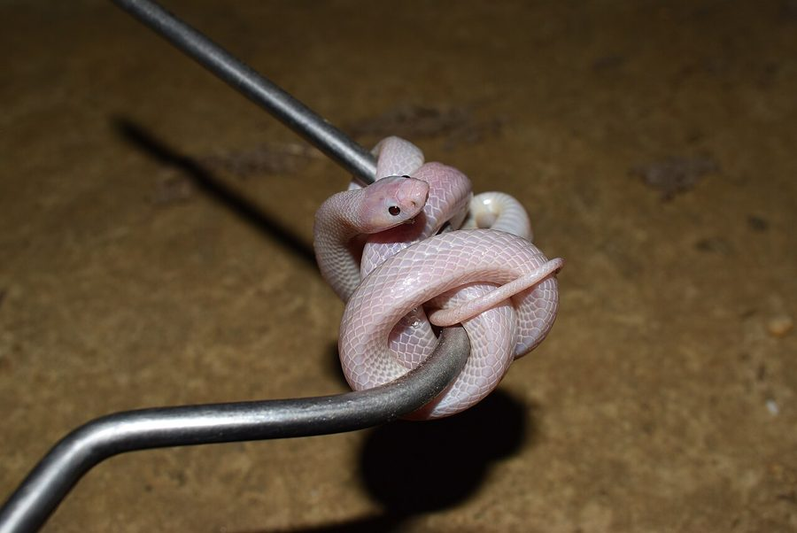

वॉल्स करैतWall's Krait
Bungarus walli · Elapidae · REP-0052

- Scientific name वैज्ञानिक नाम
- Bungarus walli Wall, 1907
- Family कुल
- Elapidae
- Hindi हिंदी
- वॉल्स करैत
- Local names स्थानीय नाम
- walls krait, wall krait, krait, awadh krait
- Status here यहाँ की स्थिति
- native
- Movement आवागमन
- Resident, here all year
- Known from कहाँ दर्ज
- Others have published records from the Basti–Ayodhya districts बस्ती–अयोध्या के ज़िलों से दूसरों के प्रकाशित अभिलेख
- IUCN IUCN
- not evaluated
- Review समीक्षा
- not yet reviewed
When to look कब देखें
Present all year. साल भर मौजूद।
Tell it apart from इनसे अलग पहचानें
वॉल्स करैत / Wall's Krait
Bungarus walli Wall, 1907 — Elapidae
वॉल्स करैत — यह अवध के मैदानी इलाकों का एक बेहद जहरीला रात्रिचर सांप है जिसे मेजर फ्रैंक वॉल ने 1907 में फैजाबाद से खोजा था। इसका शरीर चमकदार काले या गहरे कत्थई रंग का होता है जिस पर सफेद धारियों के बारीक जोड़े बने होते हैं। रीढ़ की हड्डी के ऊपर के शल्क चौड़े और षट्कोणीय होते हैं। यह रात में दूसरे सांपों और चूहों का शिकार करता है। दिन में यह जमीन की दरारों में शांत पड़ा रहता है।
Quick Identification त्वरित पहचान
| Feature | Description |
|---|---|
| Body size | Large, slender elapid snake; 1640 mm in total length (male; Smith 1943) |
| Coloration | Glossy black or dark brown above with distinct narrow white paired crossbars |
| Vertebral scales | Mid-dorsal row distinctly enlarged, hexagonal, and broader than adjacent scales (Smith 1943) |
| Head | Flat, scarcely wider than the neck, with small dark eyes and round pupils |
| Ventral scales | Number 196 to 208, uniform glossy white or ivory (Smith 1943) |
| Subcaudal scales | Number 50 to 55 (Smith 1943), undivided (single) along the length of the tail |
Field tip: Scan the edges of harvest stubble, unplastered brick kilns, and damp earthen bunds with a flashlight during warm humid nights.
हिंदी: यह चमकदार काला सांप है जिस पर सफेद धारियों के जोड़े होते हैं। रीढ़ की हड्डी के बीच के शल्क बड़े और छह कोनों वाले होते हैं। पूंछ के नीचे के शल्क इकहरे होते हैं।
Morphology आकारिकी
Biometrics as given by Smith (1943):
| Measurement | Value | Source |
|---|---|---|
| Total length | 1640 mm (male), 1500 mm (female) | Smith (1943) |
| Tail length | 190 mm | Smith (1943) |
The head is depressed and scarcely distinct from the slender neck. The eye is small, with a round pupil, about equal to its distance from the nostril. Rostral is broader than deep, visible from above. The frontal is longer than broad, roughly as long as its distance from the end of the snout. Supralabials number 7, with the third and fourth entering the orbit. Midbody scale rows number 17, and the vertebral row is prominently enlarged and hexagonal. Ventral shields range from 196 to 208, and the subcaudals are entire, numbering 50 to 55 (Smith 1943). The paired white crossbars on the dorsum are narrow and typically fade towards the anterior neck region in older adults.
हिंदी: इसका सिर गर्दन से अलग नजर नहीं आता और थूथन गोल होती है। आंखें छोटी और काली होती हैं। शरीर पर 17 कतारों में शल्क होते हैं और रीढ़ की कतार काफी चौड़ी होती है।
Behaviour & Ecology व्यवहार और पारिस्थितिकी
Wall's krait is strictly nocturnal and predominantly terrestrial. During the daytime, it secretes itself deep within subterranean rodent burrows, termite nests, brick piles, or under dense haystacks, showing extreme lethargy if uncovered. At night, it becomes exceptionally active, roving silently through agricultural fields, ditch banks, and village peripheries in search of prey. It possesses neurotoxic venom containing potent beta-bungarotoxins. Unlike vipers, it does not hiss or strike with open-mouthed displays; when confronted, it conceals its head beneath tightly coiled body loops and jerks spasmodically if touched.
हिंदी: यह पूरी तरह रात में निकलने वाला जीव है। दिन में यह चूहों के बिलों या ईंटों के नीचे शांत पड़ा रहता है। रात में सक्रिय होकर यह खेतों की मेड़ों पर शिकार की तलाश में घूमता है।
Life Cycle / Phenology जीवन चक्र
Reproductive activity commences during the hot pre-monsoon season in April and May. Courtship occurs in concealed subterranean burrows. The species is oviparous; females deposit clutches of 6 to 12 elongated, soft-shelled white eggs inside abandoned mammal burrows or termite chambers where humidity remains constant (Whitaker & Captain 2004). Females frequently remain coiled around their eggs to provide protection against subterranean predators until hatching. Incubation spans approximately 50 to 60 days (Whitaker & Captain 2004), with juveniles emerging during early monsoon rains when juvenile skinks are abundant.
हिंदी: अप्रैल और मई में इनका प्रजनन होता है। मादा जमीन के भीतर चूहों के बिलों में 6 से 12 सफेद अंडे देती है। लगभग दो महीने में अंडों से बच्चे बाहर निकलते हैं।
Host Plants or Prey आहार
This species is primarily ophiophagous, exhibiting a strong preference for other snakes. It actively preys upon the Checkered Keelback (Fowlea piscator), Buff-striped Keelback (Amphiesma stolatum), Brahminy Blind Snake (Indotyphlops braminus), and juvenile Indian Rat Snake (Ptyas mucosa). It also captures terrestrial skinks such as Spotted Supple Skink (Riopa punctata), geckos, and small rodents. It bites prey tenaciously, chewing to deliver neurotoxic venom that rapidly paralyzes the victim's respiratory muscles before ingestion head-first.
हिंदी: इसका मुख्य आहार दूसरे सांप हैं। यह पनिहा सांप, कौड़िया, अंधा सांप और छिपकलियों को खा जाता है। यह शिकार को पकड़कर अपने जहर से शांत करता है और निगल जाता है।
Predators / Natural Enemies शत्रु
Large diurnal raptors such as the Crested Serpent Eagle (Spilornis cheela) and Black Kite (Milvus migrans) occasionally prey on individuals exposed in early dawn. Adult kraits are also hunted by mammalian carnivores such as the small Indian civet (Viverricula indica) and mongoose. Humans represent the primary mortality factor, as venomous kraits entering rural mud houses during the rainy season are routinely killed.
हिंदी: चील, बाज और नेवला इस सांप को मार सकते हैं। बरसात में जब यह चूहों के पीछे घरों या झोपड़ियों में घुसता है तो इंसानी डर के कारण इसे मार दिया जाता है।
Agricultural / Human Relevance कृषि प्रासंगिकता
In the agro-ecosystems of Awadh, this snake contributes to rodent suppression, but its extreme neurotoxic venom poses a critical public health challenge. Krait bites typically occur indoors at night when sleeping villagers are bitten painlessly on floor mats, leading to delayed medical intervention and respiratory paralysis. It is protected under the Wildlife (Protection) Act 1972. Promoting raised cot sleeping and mosquito net usage effectively prevents accidental nighttime human-krait encounters.
हिंदी: इसका जहर बेहद जानलेवा होता है जो तंत्रिका तंत्र को निष्क्रिय कर देता है। जमीन पर सोने वाले लोगों को रात में इसके काटने का खतरा रहता है। चारपाई और मच्छरदानी का उपयोग इससे बचाव का सबसे अच्छा उपाय है।
Expected Locally स्थानीय रूप से अपेक्षित
Not a field record. Written from published accounts for eastern Uttar Pradesh. No confirmed local sighting yet — if you have seen it, that is what the atlas needs.
अभी तक स्थानीय पुष्टि नहीं। यह विवरण प्रकाशित स्रोतों से है, किसी अवलोकन से नहीं।
Suitable habitats across the Ayodhya and Basti region include alluvial plains, agricultural bunds bordering wetlands, canal banks, and traditional rural settlements with mud-brick architecture. Systematic nocturnal torchlight surveys around field margins from May to September provide the most reliable observation potential. GBIF holds published records from these districts. A first confirmed record requires a photograph showing the distinctive paired white crossbars and enlarged hexagonal vertebral scales submitted through the atlas platform.
Distribution वितरण
Global range: Endemic to northern South Asia, occurring in northern India, Nepal, and Bangladesh.
In India: Distributed across the Gangetic plain in Uttar Pradesh, Bihar, West Bengal, and northern Madhya Pradesh.
In Uttar Pradesh: Historically described from Faizabad (now Ayodhya); recorded across central and eastern districts.
In Basti district / eastern UP: Expected throughout the Ghaghara and Kuwana river basins in rural agricultural tracts.
हिंदी: यह उत्तरी भारत, नेपाल और बांग्लादेश के मैदानों में पाया जाता है। उत्तर प्रदेश में इसे पहली बार फैजाबाद से दर्ज किया गया था और यह अवध क्षेत्र में पाया जाता है।
Research Questions शोध प्रश्न
- How do seasonal flood events along the Ghaghara River influence krait movements into rural human habitations? / घाघरा की बाढ़ के समय इस सांप के ग्रामीण घरों में घुसने की दर में क्या बदलाव आता है?
- What is the efficacy of polyvalent antivenom currently manufactured in India against Bungarus walli venom? / भारतीय पॉलीवुडेंट एंटीवेनम इस विशेष करैत के जहर पर कितना प्रभावी है?
- What percentage of the adult diet is composed of venomous versus non-venomous sympatric snake species?
- How do agricultural intensification and mechanization affect subterranean burrow availability for daylight retreats?
- Can community health workers be trained to distinguish krait bite symptoms from neuroparalytic disorders? / क्या ग्रामीण स्वास्थ्य कर्मियों को करैत के डसने के शुरुआती लक्षणों को पहचानने का प्रशिक्षण दिया जा सकता है?
Similar Species मिलती-जुलती प्रजातियाँ
| Species | How to tell apart | हिंदी | |
|---|---|---|---|
| Common Krait \ | Bungarus caeruleus | Carries single or paired white crossbars that are more prominent along the posterior body, with fewer subcaudal scales (Smith 1943) | कॉमन करैत पर सफेद धारियां कम चौड़ी होती हैं और इसकी पूंछ के शल्क कम होते हैं |
| Banded Krait \ | Bungarus fasciatus | Strikingly patterned with alternating broad yellow and black rings of equal width along the entire body and a blunt tail tip | बैंडेड करैत पर चमकीली पीली और चौड़ी काली पट्टियां होती हैं और इसकी पूंछ का सिरा कुंद होता है |
| Common Wolf Snake \ | Lycodon aulicus | Non-venomous colubrid with white crossbars; lacks enlarged hexagonal vertebral scales and has divided subcaudals | कौड़िया सांप बिना जहर का होता है, इसकी रीढ़ पर बड़े षट्कोणीय शल्क नहीं होते और पूंछ के शल्क दोहरे होते हैं |
Field rule: Large glossy black krait with distinct paired white crossbars and broad hexagonal vertebral scales, native to the Oudh plains.
हिंदी: चौड़े षट्कोणीय रीढ़ के शल्कों और सफेद धारियों के जोड़ों वाला बड़ा काला करैत।
Taxonomy & Classification वर्गीकरण
Original description. Wall (1907), A new krait from Oudh (Bungarus walli), Journal of the Bombay Natural History Society, 17, p. 608; type locality: Fyzabad, Oudh (Ayodhya, Uttar Pradesh, India).
Subspecies. Monotypic; no subspecies are currently recognized across its Gangetic distribution.
Family and order placement. Belongs to the family Elapidae, subfamily Elapinae, order Squamata.
Phylogenetic notes. Closely allied to Bungarus caeruleus and Bungarus sindanus, forming a northern South Asian clade of terrestrial ophiophagous elapids.
IUCN status rationale. Not evaluated by the IUCN Red List; widely distributed across the Indo-Gangetic plains with substantial rural habitat.
हिंदी: मेजर फ्रैंक वॉल ने 1907 में फैजाबाद (अयोध्या) से इसका पहला वैज्ञानिक विवरण प्रकाशित किया था। यह इलापिडे कुल का सदस्य है।
Photo Gallery फोटो गैलरी
No photos yet — add field photos to media/species/walls_krait/ and run node scripts/sync_photos.js.
Photos needed आवश्यक फोटो
- [ ] Habitat view showing typical local microhabitat (प्राकृतिक वास का विस्तृत परिदृश्य)
- [ ] Dorsal view showing glossy black body with paired white crossbars (काले शरीर पर सफेद धारियों के जोड़ों का दृश्य)
- [ ] Close-up of mid-dorsal enlarged hexagonal vertebral scales (रीढ़ के बड़े षट्कोणीय शल्कों का क्लोज-अप दृश्य)
- [ ] Underside of tail demonstrating undivided subcaudal shields (पूंछ के नीचे के इकहरे शल्कों का दृश्य)
References संदर्भ
- Original description: Wall, 1907 — see GBIF.
- Smith, M. A. (1943). The Fauna of British India, Ceylon and Burma, Including the Whole of the Indo-Chinese Sub-region. Reptilia and Amphibia. Vol. III.—Serpentes. Taylor and Francis, London.
- Whitaker, R. & Captain, A. (2004). Snakes of India: The Field Guide. Draco Books, Chengalpattu.
- GBIF Occurrence Data — Bungarus walli, India (2025).
Source file: species/fauna/reptiles/walls_krait.md